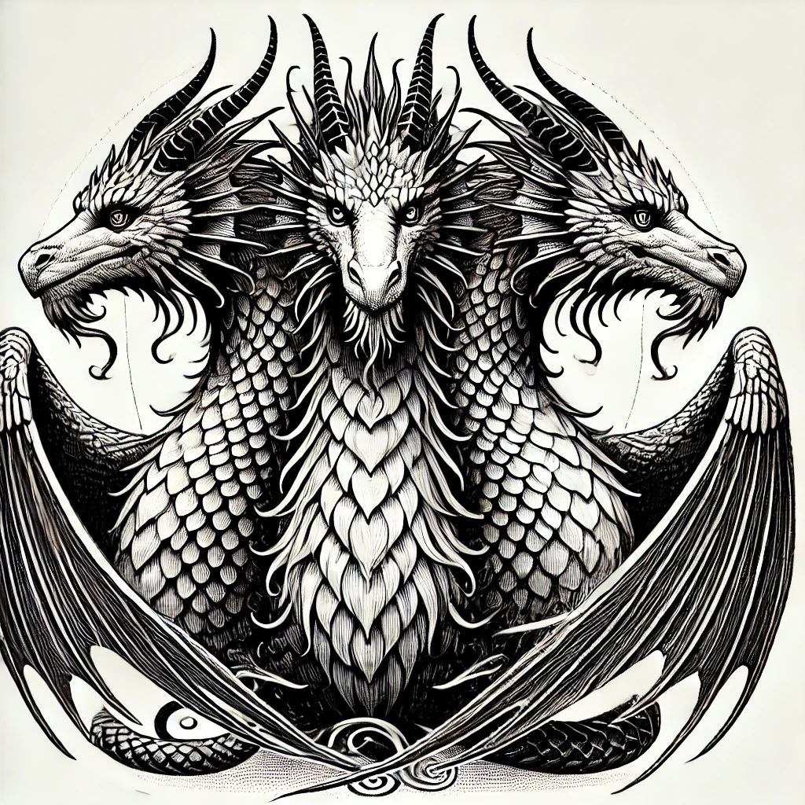

Викторина: Случайные слова А1-A2
Выберите грамматику:
Выберите грамматику
Существительное
Повелительное наклонение
Прошедшее время
Перейти к грамматике
Выберите направление:
Эстонский → Русский
Русский → Эстонский
Выберите список слов:
Все слова
Слова Глава 3
Слова Глава 5
Слова Глава 6
Слова Глава 7
Слова Глава 8
Следующий вопрос
